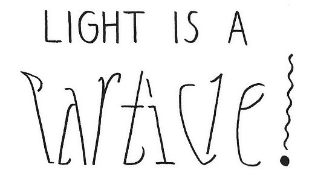

Wave-particle duality
 Although the patent office promoted Einstein to Technical Examiner Second Class in 1906, he had not given up on academia. In 1908, he became a Privatdozent at the University of Bern. In "Über die Entwicklung unserer Anschauungen über das Wesen und die Konstitution der Strahlung" ("The Development of our Views on the Composition and Essence of Radiation"), on the quantization of light, and in an earlier 1909 paper, Einstein showed that Max Planck's energy quanta must have well-defined momenta and act in some respects as independent, point-like particles. This paper introduced the photon concept (although the name photon was introduced later by Gilbert N. Lewis in 1926) and inspired the notion of wave–particle duality in quantum mechanics. Einstein saw this wave–particle duality in radiation as concrete evidence for his conviction that physics needed a new, unified foundation.